FairRARI:
A Plug and Play Framework for Fairness-Aware PageRank
TL;DR
While PageRank-style algorithms are essential for navigating large networks, they often marginalize specific subgroups through systemic bias. We introduce FairRARI, a "plug-and-play" framework that bakes fairness directly into the algorithmic process. FairRARI provides rigorous mathematical guarantees for user-defined fairness goals (like equal group visibility) while maintaining the high efficiency and accuracy of the original PageRank.
Abstract
PageRank (PR) is a fundamental algorithm in graph machine learning tasks. Owing to the increasing importance of algorithmic fairness, we consider the problem of computing PR vectors subject to various group-fairness criteria based on sensitive attributes of the vertices. At present, principled algorithms for this problem are lacking - some cannot guarantee that a target fairness level is achieved, while others do not feature optimality guarantees. In order to overcome these shortcomings, we put forth a unified in-processing convex optimization framework, termed FairRARI, for tackling different group-fairness criteria in a "plug and play" fashion. Leveraging a variational formulation of PR, the framework computes fair PR vectors by solving a strongly convex optimization problem with fairness constraints, thereby ensuring that a target fairness level is achieved. We further introduce three different fairness criteria which can be efficiently tackled using FairRARI to compute fair PR vectors with the same asymptotic time-complexity as the original PR algorithm. Extensive experiments on real-world datasets showcase that FairRARI outperforms existing methods in terms of utility, while achieving the desired fairness levels across multiple vertex groups; thereby highlighting its effectiveness.
Why FairRARI?
A New Variational Optimization Framework
Consider a (un)directed graph \(\mathcal{G} = (\mathcal{V}, \mathcal{E})\), with \(n:=|\mathcal{V}|\) vertices and \(m:=|\mathcal{E}|\) edges that is (strongly) connected. The PageRank (PR) algorithm models the action of a random walker visiting vertices in \(\mathcal{G}\) in accordance with a \(n \times n\) probability transition matrix \(\mathbf{P}\), where each entry \(P_{ij}\) denotes the probability of transitioning from vertex \(j\) to vertex \(i\). Let \(\mathbf{A}\) and \(\mathbf{D}\in\mathbb{R}^{n\times n}\) denote the adjacency and diagonal degree matrix of \(\mathcal{G}\), respectively - for directed graphs, \(\mathbf{D}\) denotes the out-degree matrix. The transition matrix \(\mathbf{P}\) is formed by normalizing each column of \(\mathbf{A}\) to sum to one, \(\mathbf{P}:=\mathbf{A}\mathbf{D}^{-1}\). Let \(\boldsymbol{\Pi} := \mathrm{diag}(\boldsymbol{\pi})\), where \(\boldsymbol{\pi}\) is the stationary distribution of \(\mathbf{P}\). For an undirected \(\mathcal{G}\) that is connected and non-bipartite, this reduces to \(\boldsymbol{\Pi} = \frac{1}{2m}\mathbf{D}\). PR modifies the standard random walk on \(\mathcal{G}\) by utilizing restarts, specified by a teleportation probability \(\gamma\) and a teleportation vector \(\mathbf{v}\). The output of the algorithm is the PR vector \(\boldsymbol{\pi}_{\mathrm{o}}\). Since we use \(\mathbf{x}\) as a network centrality measure, we set \(\mathbf{v}\) to be the uniform vector.
The original PR vector \(\mathbf{p}_{\mathrm{o}}\) can be computed by applying the following fixed-point iterations [1] $$ \mathbf{x}^{(t+1)} = (1-\gamma)\mathbf{P}\mathbf{x}^{(t)} + \gamma \mathbf{v} $$ where \(\mathbf{x}^{(0)}=\mathbf{v}\) or \(\mathbf{x}^{(0)}=0\).
FairRARI transforms the PageRank problem into a constrained (strongly, for undirected graphs) convex quadratic optimization problem. We minimize the following objective over a closed convex set \(\mathcal{X}\):
The minimizer of the above problem equals the fixed point of the following iterations. This is the basis for our algorithm FairRARI:
The above iterations converge at a geometric rate to a unique fixed point.
Great Scalability
Proposed Fairness Criteria
The primary computational challenge of FairRARI lies in the projection step \(\mathrm{Proj}_{\mathcal{X}}(\cdot)\), which highly depends on the structure of the constraint set \(\mathcal{X}\) that encodes the fairness criteria. We introduce three different fairness criteria for which the projection can be computed in linear time. Consequently, FairRARI computes fair PR vectors with the same asymptotic time complexity as the original PR algorithm.
- 1. \(\boldsymbol{\phi}\)-sum fairness: Ensures that the collective PageRank mass of each vertex group \(\mathcal{S}_k\) strictly equals a target fraction \(\phi_k\). By tuning \(\phi_k\), users can implement group parity policies - such as true demographic parity by setting \(\phi_k = n_k/n\) [3]- generalized seamlessly for any arbitrary number of groups (\(K \geq 2\)).
- 2. \(\boldsymbol{\alpha}\)-min fairness: Motivated by the Rawlsian principle of social justice [4], this criterion regulates individual vertex scores rather than aggregate mass. It guarantees that every single vertex within designated protected subsets \(\mathcal{A}_k \subseteq \mathcal{S}_k\) is allocated a strict minimum baseline PageRank score of \(\alpha_k \geq 0\), preventing vertices from being completely marginalized or dropped to zero.
- 3. \(\boldsymbol{\phi}\)-sum + \(\boldsymbol{\alpha}\)-min fairness: The most general formulation, providing fine-grained control by simultaneously combining the above criteria. It constrains the total PageRank scores of each group \(\mathcal{S}_k\) to sum exactly to \(\phi_k\), while strictly ensuring that no individual vertex within the target subgroup \(\mathcal{A}_k\) falls below the individual threshold \(\alpha_k\).
The complexity of the first step of FairRARI iterations is \(O(m+n)\).
Additionally, for the second part, the worst-case complexity of the projections across all considered constraints is strictly \(O(n)\), resulting in an overall per-iteration complexity of \(O(m+n)\).
Hence, the final complexity figure after \(T\) iterations is \(O((m+n)\cdot T)\), where \(T = O\left(\frac{\log (1/\epsilon)}{\log (1/(1-\gamma))}\right)\).
Hence, FairRARI exhibits the same asymptotic time complexity as the standard (non-fair) PR algorithm.
Solving the "Zero-Score" Pitfall
Post-processing modifies the original PageRank vector through a direct, graph-agnostic correction determined solely by the active fairness constraints. In contrast, the inherently in-processing nature of FairRARI corrects the original PageRank vector via a graph diffusion term in order to arrive at the solution. As a result, it avoids enforcing fairness at the cost of assigning zero PageRank scores to certain vertices, as opposed to the post-processing baseline.
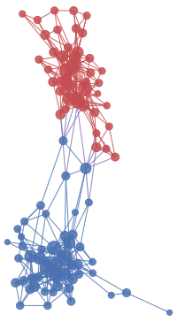
(a) Original PageRank
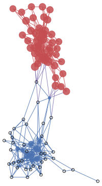
(b) Post-Processing
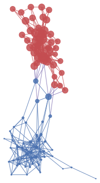
(c) FairRARI (Ours)
Figure 1. Evaluation over \(\phi\)-fairness with two vertex groups (red/blue) on the PolBooks dataset. Vertex size is proportional to the PageRank score produced by each method. Black circles reflect vertices completely dropped to absolute zero values. The original PageRank vector (a) assigns \(\phi^\text{red}_\mathrm{o}\! =\! 0.47\) of the total PR mass to the red group. The target for the fair PR vectors is \(\phi^\text{red}\! =\! 0.9\) of total mass for the red group. While both fair PR vectors in (b) and (c) attain this target, \(37/49 \approx 75\%\) of blue vertices in (b) are set to zero, while \(0\%\) of the blue vertices suffer such an undesirable outcome for FairRARI (c).
Empirical Results
Experiments on real-world datasets demonstrate that FairRARI consistently outperforms existing methods [2] in terms of utility, while achieving the desired fairness levels across multiple vertex groups; thereby highlighting its effectiveness.
Total Variation Distance
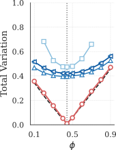
(a) Deezer
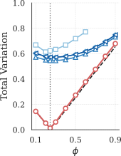
(b) GitHub
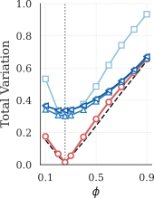
(c) DBLP-G
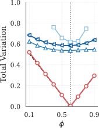
(d) TwitchDE-2
Figure 2.
Total Variation (Lower is Better)
For various values of \(\phi\), FairRARI consistently yields a significantly lower TV, very close to the lower bound, indicating that the resulting fair PR distribution is much closer to that of the original PR.
Notably, when \(\phi\) is equal to \(\phi_\mathrm{o}\) (vertical dotted lines), FairRARI attains zero TV, in contrast to the prior methods, which incur a much higher cost, typically around \(0.5\).
This underscores the effectiveness of our approach, since when the original PR solution already satisfies the desired fairness level, it is naturally the optimal solution.
Kendall Tau Rank Correlation
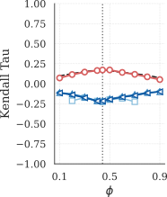
(a) Deezer
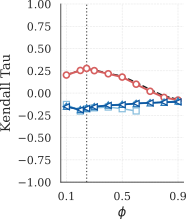
(b) GitHub
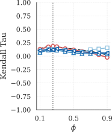
(c) DBLP-G
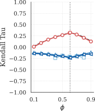
(d) TwitchDE-2
Figure 3.
Kendall Tau (Higher is Better)
For various values of \(\phi\), FairRARI consistently yields a significantly higher Kendall Tau values, very close to the lower bound, indicating that the resulting fair PR ranking is much closer to that of the original PR.
This figure shows the agreement between the rankings induced by the fair PR vectors \(\mathbf{p}_{\mathrm{F}}\) and the original PR vector \(\mathbf{p}_{\mathrm{o}}\), using the Kendall Tau rank correlation coefficient.
Across most fairness levels and datasets, FairRARI achieves the highest Kendall Tau scores, significantly outperforming prior methods.
Multiple Groups (\(K > 2\))
Unlike prior methods that handle only binary vertex attributes, FairRARI effectively addresses the multi-group scenario by satisfying the fairness constraints while achieving TV values that are close to the post-processing solution. Notably, FairRARI achieves lower TV on the Twitch datasets even in the more challenging setting with 4 groups, compared to prior methods on the easier 2-group setting. As shown in the following Figures, the TV for the TwitchDE dataset with 4 groups is consistently lower than that of the prior methods on TwitchDE-2 with 2 groups.
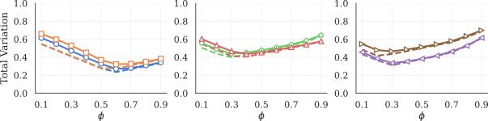
\(\boldsymbol{\phi}\)-sum + \(\boldsymbol{\alpha}\)-min-fairness
Enforcing \(\boldsymbol{\phi}\)-sum-fairness can result in some vertices receiving zero scores. This observation motivates the need of this more stringent criterion, which additionally enforces a minimum score threshold for certain vertices. In the following Figure, we present the TV achieved by FairRARI and compare it against the lower bound obtained via the post-processing method. Since this is a more stringent fairness constraint, the bound remains far from zero, but FairRARI achieves TV values that are close to it. Notably, there are cases where the TV achieved by FairRARI, under the combined \(\boldsymbol{\phi}\)-sum + \(\boldsymbol{\alpha}\)-min-fairness constraints, is lower than that of prior methods that enforce the simpler \(\boldsymbol{\phi}\)-sum-fairness constraint, such as on the TwitchDE-2 dataset.
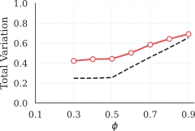
(a) GitHub
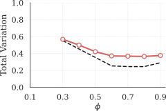
(b) TwitchDE-2
References
- David F. Gleich. "PageRank Beyond the Web." SIAM Review 57, no. 3 (2015): 321-378. CrossRef
- Tsioutsiouliklis, S., Pitoura, E., Tsaparas, P., Kleftakis, I., and Mamoulis, N. "Fairness-aware pagerank." In Proceedings of the ACM Web Conference pp. 3815-3826, 2021. CrossRef
- Dwork, C., Hardt, M., Pitassi, T., Reingold, O., and Zemel, R. "Fairness through awareness." In Proceedings of the 3rd Innovations in Theoretical Computer Science Conference pp. 214-226, 2012. CrossRef
- Rawls, J. "A theory of justice." In A theory of justice. Harvard University Press, 2020. CrossRef
BibTeX
@inproceedings{kariotakis2026fairrari,
title={FairRARI: A Plug and Play Framework for Fairness-Aware PageRank},
author={Kariotakis, Emmanouil and Konar, Aritra},
booktitle={International Conference on Machine Learning},
year={2026},
organization={PMLR}
}